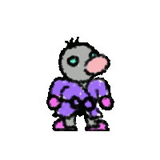
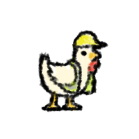
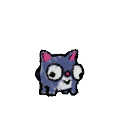
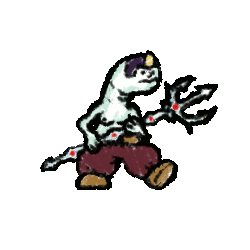
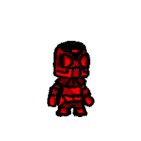
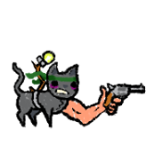

Concept Art
While there are plenty of concept and design sketches made for Abomination Fight Pit Deluxe, they rarely step outside the bounds of rough sketches. Many of the characters however use visual designs that I’ve produced in the past, and thus I find it worthwhile to post those here.
Prince Slime
The designs for both Prince Slime and Clout Bumbleridge were produced within minutes of each other during an... Altered state of conciousness fueled drawing spree. They were later revisited and cleaned up once I realized how much I actually liked the designs. Around the middle of development I rediscovered them, and realized that, being abominations, they’d fit right in Abomination Fight Pit Deluxe. Prince Slime in particular I felt I could make an interesting moveset utilizing his trident.

Clout Bumbleridge
This is Clout Bumbleridge. He is an abomination, but is not in the game as of 0.5.0. He is here because he may be added in a future update, but for now I’m focusing much more on cameo characters. He would certainly fill the current void of heavy, strong, but slow characters, but what exactly his moveset will be is still to be determined.
TC-C016
TC-C016 is the protagonist of my first real passion project, a sidescrolling survival horror game called SAFE, and the second cameo character to be introduced to AFPD. Although this game ceased development around 2014, every once and a while I like to revisit it to exercise my art skills. Their appearance in AFPD uses the latest design, produced in mid-2019, shown on the right and on the right-most sprite below. The first two sprites were two iterations that appeared in the original prototype, the third is a test redesign made around 2016. In my mind, TC-C016 is actually a somewhat controversial addition, as it almost feels disrespectful to the source material, being in such a silly and light-hearted game. SAFE by comparison had a much more depressing tone in its story and game-feel. It was a bit like a more lonesome Pathologic, where everything feels cumbersome and the player is treated like garbage. Story-wise, TC-C016 is the last remaining member of a forcefully sterilized and cybernated slave species after a freighter crashes during its descent to colonize a hostile, post-apocalyptic Earth. The story was heavy on themes of entropy, mass-incarceration, and the I Have No Mouth and I Must Scream trope of living turned torment.


Design/Concept Sketches
Fair warning, these are going to be pretty rough.
Fighters
On the left will be the concept sketches, which focus on the characters’ movesets, and on the right will be the final result of those designs. With the final designs, their special attack animation will be shown at the top, their grounded normal attack animations will be shown on the left, and their normal aerial attack animations will be shown on the right. The order of the normals from top to bottom is normal up, normal neutral, and normal down. The design drafts may or may not follow this order.
Note that in many of these sketches, special attacks are not drafted. When those characters were designed, special attacks were not yet in the game, and when they were added, they skipped the design phase, going from my brain straight into the art phase. In addition, many attacks do not many details, usually simply just noting something like “ness dair.” These refer to attacks present in other platform fighters that I aimed to emulate the functionality or animation of. Many attacks start out like this, and evolve into unique attacks as I develop the character.
Cat Tosser


Cat Tosser was of course the first character designed for AFPD, being from it's foundation, Cat Tossers Showdown. Obviously it was no longer viable to have cats rain from the sky, so I had to come up with another way for Cat Tosser to get cats to toss. My solution would take inspiration from Peach's turnips and Olimar's pikmin from Super Smash Bros, but add a twist. In those games, one move would cause the character to receive those items, but with Cat Tosser, I decided that every ground attack should pull a cat from the ground. GAD would be the quickest way to retrieve a cat, but would not put out an active hitbox. GAN would be a slow, but effective kill option, and also pull a cat. GAU would be a situational launcher, and also pull a cat. The cats' strange physics would become the most interesting aspect of this character, with a thrown cat's hitbox not deteriorating until after it hits the ground, and the fact that thrown cats can collide with other cats, allows Cat Tosser to stack cats, thus creating a pillar of active hitboxes walling off part of the stage. Cat Tosser's aerial attacks were designed to compliment throwing cats; Cat Tosser can toss a cat, hit the opponent, perform an AAN, as an example, the act of which would also recatch the cat. Their ABN/GBN was created later mainly as a means of recovery, but if Cat Tosser is holding a cat while performing it, it acts as a ridiculously high-damage multi-hit attack, albeit one that's very difficult to connect.
The robot at the top is just a doodle.
Carpenter Chicken


Carpenter Chicken was introduced in Neo Fight Fighters: The Fighters, the second AFPD prototype. Cat Tossers Showdown was an assignment for another class, and Neo Fight Fighters was a subsequent assignment for that class; It wasn't until the game was formally renamed to AFPD did I truly begin to develop the game for myself, in so doing kind of tuning out of that class. But with that said, there was a list of prompts given for this second assignment, two of which were carpentry, and chicken. Thus, Carpenter Chicken was born.
Manipulating the stage was a natural evolution of the carpentry concept, Carpenter Chicken can build crates, which put out a hitbox on build, but more importantly, wall off certain parts of the stage. They can also be destroyed, causing them to explode, producing an effective kill-option. This is especially effective if multiple crates are placed next to each other, as the explosions will then chain, covering a lot of space. The hammer throw attack, originally Carpenter Chicken's normal neutral attack but would later become his special, was designed so that Carpenter Chicken could punish opponents near the boxes at any range.
Sputnik
Sputnik was the first cameo appearance in AFPD, originally appearing in Help Sputnik Get to Space, one of my favorite past projects. Although Sputnik is functionally a Jigglypuff clone, he has a few unique moves, and a few attacks and attributes that are emphasized or de-emphasized to make his play-style stand out a bit.
Prince Slime

{kind=link}
{kind=link}
{kind=link}
{kind=link}
As mentioned above, the catalyst for Prince Slime's inclusion was his trademark trident, filling the game's then-void of long-range melee characters. He was a pretty difficult character to animate and program, and beneficially stretched the game's foundation quite a bit. One of my favorite attacks of any platform fighter would be Bowser's side-b in Super Smash Bros. Project M, which is a command grab where, upon landing, Bowser could then throw the opponent in 1 of 4 directions, which would be different depending on whether Bowser was grounded or airbourne. With Prince Slime's special, I took this a step further, drastically increasing the grab range, and allowing Prince Slime to angle the grab in addition to the throw. Aside from his special, the rest of his kit was designed to cater to an ultra-offensive playstyle, with quick aerial combo-tools and devastating grounded kill-options.
TC-C016
{kind=link}
TC-C016 is the second cameo character in AFPD, originally appearing as the protagonist in one of my very first projects that was unfortunately never completed, a survival horror sidescroller called SAFE. Although I have a strong nostalgic fondness for the source material, the catalyst for this character was not the character itself, but their moveset; My primary desire was to create a character that could perform a DJC, or double-jump cancel, which is performed by performing an aerial attack after double-jumping. The utility of this mechanic is to allow for quick, low to the ground, aerial combos. Quite a bit of thought and care went into designing the moveset for this character in particular. The character would need to be fast, combo-oriented but short-ranged, and have few, but strong tools to deal with defensive play and create openings. Thus the design challenge behind this character was to interpret the source material in a way that would fit this mold.
I first looked at the actions that could be performed in the original prototype, then looked at the actions I wanted to add but never got a chance to, then filled out whatever was left with new ideas. In SAFE, you could walk, jump, grab and climb ledges, perform a dodge-roll, and equip, draw, and use different weapons. The weapons in the original protype included a knife, a charge-based blaster, and a charge-based stun-gun. Although it wasn't in the original prototype, I also wanted to add rocket or hover boots as a permanent upgrade to the game while I was working on it. The rocket boots in particular is what solidified TC-C016's viability to fit this mold, and would become their double-jump. The idea to make the rocket-boots fuel based was inspired by the original game's emphasis on resource management, but ended up solving a significant design problem while introducing new methods of movement. In other platform fighters with DJC characters, if you perform a DJC and accidentally end up off-stage, you are put in a defensive scenario that often makes it impossible to recover. By making the rocket-boots fuel based, this issue is solved, since you can jump as many times as you want as long as you have the fuel necessary to do so. This also means you can perform multiple double-jumps in different directions, allowing you to zig-zag up to your opponent to follow-up during a combo. TC's stun-gun was a must, as it was the primary defensive option from the original prototype, and would become their grounded down normal, or GAD, attack. Of course SAFE's stun-gun was unwieldy by design, and would have to become more efficient for a faster-paced game like this. The result is a fast and large close-range attack that deals 2.7x the standard amount of hit-stop/hit-lag, making it optimal for turning the tables on an approaching attacker. The charge-based blaster became TC's ground normal neutral, or GAN, attack. This attack fit in naturally and was simple to design, using Samus' charge-shot from Super Smash Bros. as a template. No attack was inspired by the knife, rather it fit in with my concept for TC's aerial normal neutral, or AAN, attack. The idea behind this attack was to provide a combo option and a kill-move in the same attack. The result is a forward facing kick, serving as the combo tool, and a backward facing stab, serving as the kill-move. At this point, the well had run dry. I thought about adapting the dodge-roll into an offsensive maneuver, but I felt that went against my design philosophy as it streamlined the character's movement too much. I know had to look at what was missing, and how to fill in those gaps. Being a primarily close-range character, TC needed an option to help deal with projectiles, thus their special attack, a reflector that sends projectiles and items back at the attack was born. They needed a stylish off-stage vertical finisher that could also be useful for low-percent vertical combos thus the rocket boot stomp became their AAD attack. Their grounded up normal was entirely born of what I thought would be a cool, somewhat gimmicky addition, a lazer whip that drags airbourne opponents down to TC to start a combo. And finally their AAU would be a vertical combo tool with low kill-power and base knockback so that a combo started with it at low percents could become a horizontal combo or a vertical combo, basically ripped from Ness' up air attack from Super Smash Bros, as TC has a large noggin and it kinda made sense that they would use it to attack, if you don't think about it too much. The result of all this is one of the more unique characters in the game, with very defined strengths and weaknesses that also pays homage to my original passion project.
ROBOCAT
{kind=link}
ROBOCAT is the next character currently in production. ROBOCAT is the playable character from one of my most formative games, ROBOCAT 02 II DUO / PI JUDGEMENT DAYS. Canonically, ROBOCAT is the angel of death posing as a figmentation of a weird cat.
TBD Fighters
The following concepts are fighters that may or may not be added at a later date. There's quite a few of them, so I won't get into detail about any of them.
Additional Design Sketches